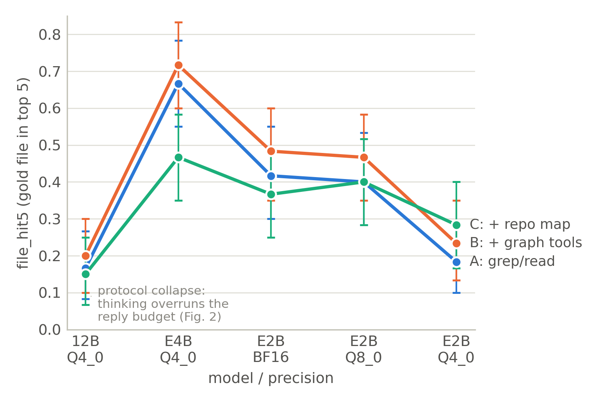
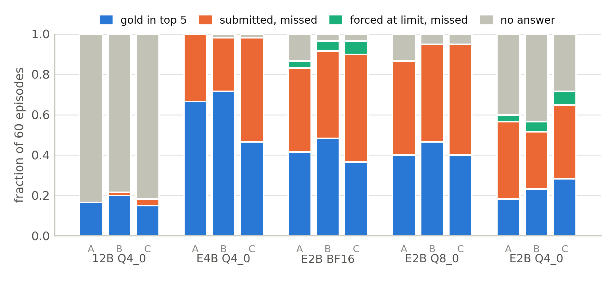

Abstract.Coding agents on consumer hardware must trade model size against precision. We ask whether structure — code-graph navigation tools and repository maps — can buy back what scale gives up. We run 900 bug-localization episodes on SWE-bench Lite across five Gemma 4 configurations (12B, E4B, E2B at Q4_0; E2B also at Q8_0 and BF16) and three toolsets on a single RTX 4070 (12 GB). Graph tools help every configuration (pooled +5.3 points, p=0.031). A repository map, however, crosses over: it hurts the strongest model (−20 points) and helps the weakest (+10 points; interaction +30 points, p<0.0001). Quantizing E2B to Q8 is free; Q4 halves accuracy. The 12B model fails for a reason nobody's leaderboard shows: its thinking overruns the reply budget at exactly the moment it must answer.
Today's best coding agents call large API models in the cloud. On the hardware most developers actually own — a 12 GB consumer GPU — an agent must use a smaller model, a quantized one, or both. The usual response is to shrink the model and accept the loss. This paper asks whether the agent's tooling can absorb some of that loss instead: if a small model cannot hold a repository's architecture in its head, can tools that externalize structure — jump-to-definition, reference search, call graphs, a ranked repository map — substitute for the capability that scale would have provided?
We study the first stage of bug fixing, fault localization: given an issue, name the files and functions that must change. Localization is where repository structure should matter most, it has unambiguous gold labels (the files touched by the reference patch), and it is cheap enough to evaluate factorially on one consumer GPU.
Our design crosses two axes a local deployment actually controls — model size (Gemma 4 E2B / E4B / 12B, all Q4_0) and precision (E2B at BF16 / Q8_0 / Q4_0) — with three toolsets: A plain search (list_dir, read_file, grep); B = A plus code-graph tools (outline, find_definition, find_references, callees); C = A plus an issue-ranked repository map injected into the prompt. Three questions:
Contributions. (1) A 900-episode factorial study (5 models/precisions × 3 toolsets × 60 SWE-bench Lite instances) run end-to-end on one 12 GB GPU in 21.7 GPU-hours. (2) Evidence that interactive graph tools are a small, uniform win, while pre-digested structure (a repo map) trades places with scale: a crutch that helps the weak and trips the strong. (3) A failure taxonomy over all 564 misses separating three regimes — thinking-budget overrun (12B), genuine navigation error (E4B), and protocol degradation (E2B-Q4) — with direct design guidance for offline agents.
SWE-bench [Jimenez et al., 2024] and SWE-agent [Yang et al., 2024] established repository-level issue resolution and showed interface design materially changes agent performance; SWE-bench Lite is its standard 300-instance subset. Agentless [Xia et al., 2024] showed a fixed localize-then-repair pipeline rivals full agents, making localization quality a first-class metric. Repository maps are used in production assistants such as Aider, which ranks files by graph centrality and issue relevance; RepoGraph [Ouyang et al., 2025] and similar work attach graph structure to agents and report gains for frontier models. Post-training quantization methods such as GPTQ [Frantar et al., 2023] and AWQ [Lin et al., 2024] are validated on single-turn benchmarks (perplexity, HumanEval); much less is known about how low precision degrades multi-turn agentic behaviour — protocol adherence, tool-call formatting, knowing when to answer. Function-calling evaluations such as BFCL [Yan et al., 2024] measure format reliability, but in isolation rather than inside a long agent loop, and rarely across quantization levels of the same model. Gemma 4's thinking mode follows the test-time-reasoning line of work; our results show its interaction with tight reply budgets is a deployment hazard in itself. Our contribution is not a new tool but a controlled crossing of structure with scale and precision, on hardware developers own.
Agent loop. A minimal prompted-JSON loop, identical for every condition: the system prompt lists the available tools; each turn the model replies with one fenced JSON tool call; tool output is returned as an observation. An episode ends when the model calls submit(files, functions) (up to five of each, best first) or after 20 turns, after which one final forced-submit turn demands an answer. Decoding is greedy (temperature 0), replies capped at 1,024 tokens, context 16k, observations truncated to 4,000 characters, and older observations are elided from the prompt (the last three are kept verbatim) so the episode fits the window. The loop, prompts, and caps are frozen across all 15 cells; only the toolset and model vary.
Toolsets.
list_dir, read_file, grep — what a developer gets from a bare shell.outline(path), find_definition(name), find_references(name), callees(path, function), built from jedi and Python's ast over the checked-out repository. These externalize the code graph but the model must still ask.Tool-call parsing as measurement, not gatekeeping. Small and quantized models drift from the requested JSON format in systematic ways: Gemma 4 often emits its native <|tool_call>call:name(args) syntax; E2B at BF16/Q8 flattens arguments to the top level ({"tool": "submit", "files": [...]}); E2B-Q4 fuses a Python call into the tool field ({"tool": "grep(pattern=...)"}). Our parser accepts all of these whenever the intent is unambiguous (literal arguments only), and counts a reply invalid only when no tool call can be recovered. Rejecting recoverable calls would measure our protocol choice rather than the model: in a pilot, strict-JSON parsing scored E2B-Q8 near zero purely because its (correct) submissions were flattened. Invalid-call counts are reported as an RQ3 outcome.
Metrics. file_hit5 (any gold file in the top 5 — primary), file_acc1, func_hit5, submit rate, and invalid calls per episode. Gold labels are the files and enclosing functions modified by the instance's reference patch.
Statistics. Every cell sees the same 60 instances, so all comparisons are paired. We use a paired bootstrap (10,000 draws) over instances for cell CIs, toolset gains, pooled gains (300 pairs across the five models), and difference-in-differences interactions; p-values are one-sided for the preregistered direction (structure helps; gains grow as capability falls).
Models. Official ggml-org/gemma-4-*-it-GGUF builds (SHA-256 verified): E2B at BF16, Q8_0, Q4_0 (the precision axis — E2B is the only size whose BF16 fits in 12 GB), and E2B/E4B/12B at Q4_0 (the size axis). Served by llama.cpp (CUDA) with --jinja, which applies Gemma 4's chat template, including its thinking channel: reasoning is split into a separate field and the agent sees only the final content — uniformly across all five configurations.
Tasks. 60 SWE-bench Lite instances sampled uniformly (seed 0), localization only; the agent navigates a checkout of the repository at the buggy commit and never edits code. Gold labels are identical across all 15 cells by construction, and we re-derived them independently from the reference patches for a random 10-instance sample (10/10 exact matches).
Hardware. One Windows workstation with an RTX 4070 (12 GB). Every model fits entirely in VRAM. The full 900-episode grid took 21.7 GPU-hours: 38 s per episode for E4B-Q4, 40–61 s for the E2B variants, and 251 s for 12B-Q4 — the largest model costs 6.6× the time of E4B for, as we show, a quarter of the accuracy.
| Model | A: search | B: + graph | C: + map | submit% (A/B/C) | invalid/ep (A/B/C) |
|---|---|---|---|---|---|
| 12B Q4_0 | .167 [.083,.267] | .200 [.100,.300] | .150 [.067,.250] | .17/.22/.18 | 5.0/4.8/6.3 |
| E4B Q4_0 | .667 [.550,.783] | .717 [.600,.833] | .467 [.350,.583] | 1.0/1.0/.98 | 0.9/1.4/0.9 |
| E2B BF16 | .417 [.300,.550] | .483 [.350,.600] | .367 [.250,.483] | .87/.97/1.0 | 2.1/0.4/0.4 |
| E2B Q8_0 | .400 [.283,.533] | .467 [.350,.583] | .400 [.283,.517] | .87/.95/.98 | 1.5/0.6/0.7 |
| E2B Q4_0 | .183 [.100,.283] | .233 [.133,.350] | .283 [.167,.400] | .68/.60/.80 | 2.2/2.1/1.4 |
RQ1: graph tools are a small, uniform win. B beats A at every one of the five configurations (+3.3 to +6.7 points). No single-cell gain is significant alone (one-sided p = .16–.34 at n=60), but pooled over the 300 paired episodes the gain is +5.3 points [+0.0, +10.7], p = 0.031. Graph tools also stabilize the protocol where it is shaky: on E2B, invalid calls per episode drop from 2.1 to 0.4 (BF16) and 1.5 to 0.6 (Q8) when graph tools are available — a structured query seems easier to emit correctly than an improvised grep.
RQ2: the gain from structure does not simply grow as scale falls — it depends on which structure. For interactive graph tools the answer is no: the B−A gain is nearly constant across configurations, and every interaction contrast is null (e.g., E2B-Q4 minus E4B: +0.0 points, p = 0.56). But for the repository map the answer is dramatically yes. C hurts the strongest model, E4B (−20.0 points [−33.3, −6.7] — the reversal is significant) and helps the weakest, E2B-Q4 (+10.0 points [−1.7, +21.7], p = 0.069, its best cell). The difference-in-differences is +30.0 points [+15.0, +45.0], p < 0.0001 (Figure 1). The map's ranking has gold-file recall of only 0.35, which explains both arms: E4B navigates better than the map — anchoring on it displaces its own search, and its near-miss rate (wrong file, right directory) rises from 35% to 53% of failures — while E2B-Q4, which often cannot complete a search at all, gets a free list of plausible files and a format it can copy into a submission (its submit rate rises from 68% to 80%).

file_hit5 by model/precision and toolset, 95% bootstrap CIs. Graph tools (B) sit above plain search (A) everywhere; the repository map (C) crosses over — below A on E4B, above A on E2B-Q4.Precision: Q8 is free, Q4 is not. On E2B, Q8_0 matches BF16 within noise at every toolset (.400 vs .417 on A; .467 vs .483 on B) at half the memory. Q4_0 halves accuracy (.183 vs .417 on A) and degrades behaviour: submit rate falls from ~.87 to ~.68, episodes run longer (16.5 vs 12.6 mean turns), and graph tools lose their stabilizing effect — invalid calls stay at 2.1 per episode under B, where BF16 drops to 0.4. Function-level localization (func_hit5) is near zero for every E2B variant (≤.03) but reaches .20 on E4B-Q4 — files can be scaffolded; naming the right function still takes capability.
RQ3: three distinct failure regimes (Figure 2). We classified all 564 misses automatically by terminal state, then manually inspected a stratified sample (4 failures per cell, n=60, seed 0; labels released in failures.csv): the manual labels agreed with the automatic category in all 60 cases.
models.py, src/plotting/axis.py) — path hallucination rather than navigation error.
Scaffolding vs. crutch. The two kinds of structure behave differently because they sit at different points in the capability curve. Interactive graph tools are scaffolding: they shorten the path for any model that can already walk it, hence a small, uniform gain. A pre-digested map is a crutch: for a model that cannot search, it substitutes for the whole walk; for a model that searches well, it competes with — and loses to — the model's own evidence, at 0.35 recall. The practical rule for offline agents is directional: give the weakest models a map; give capable models tools and get out of the way.
Budgets are part of the model choice. The 12B result generalizes beyond our harness: any thinking model deployed under tight output budgets can silently spend its entire budget thinking. On consumer hardware, where 12B is also 6.6× slower per episode, the "biggest model that fits" is a trap. If a large thinking model must be used, the reply budget must scale with its deliberation length, or thinking must be truncated/disabled at serve time.
Protocol leniency is an evaluation requirement. Format drift is systematic and precision-dependent (flattened JSON at Q8/BF16, fused calls at Q4, native syntax throughout). A strict parser converts these into fake capability losses — in our pilot it erased nearly all of E2B-Q8's correct submissions. Agent frameworks targeting small local models should parse intent, not syntax; papers evaluating them should report recovered-format rates.
Choice for our competition agent. E4B-Q4 with graph tools is the clear deployment point: best accuracy (.717), perfect submit discipline, cheapest per episode. Our main-track entry therefore uses E4B with toolset B for localization.
Sixty instances per cell gives honest CIs but limited per-cell power; the pooled RQ1 gain is significant, the per-cell gains are not, and SWE-bench Lite is Python-only, with possible contamination of model pretraining. We evaluate localization, not end-to-end repair; one agent loop, one prompt family; the repo map is lexical (a stronger, graph-ranked map might not show the E4B reversal); and the 12B finding is about one budget (1,024 tokens) of one thinking model. Within those bounds the answer to our title question is: structure over scale, yes — but match the structure to the scale. Graph tools are a cheap, always-positive addition; repository maps should be gated on model capability; Q8 quantization is free and Q4 is expensive in both accuracy and protocol discipline; and a thinking model under a small reply budget can fail at 100% precisely at the answer step — usually after it has already surfaced the right file.
All code (agent loop, tools, grid driver, bootstrap analysis, taxonomy, figures), all 900 raw trajectories, and the analysis JSONs are released at github.com/NoorTasfia/structure-over-scale-paper. Models are the official ggml-org GGUFs (hashes pinned); tasks are the seed-0 sample of SWE-bench Lite; every run is deterministic (greedy decoding) up to llama.cpp kernel nondeterminism. The entire study reruns on one 12 GB GPU in under a day.